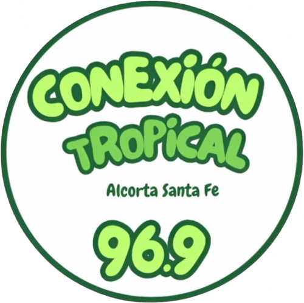

Conexión Tropical 96.9
Inicio
Programación
Nosotros
Contacto
Inicio
Programación
Nosotros
Contacto
¡Bienvenido a Conexión Tropical 96.9!
Tu emisora favorita con los mejores ritmos tropicales, en vivo las 24 horas.
¡Mira nuestro Canal de Televisión en Vivo!